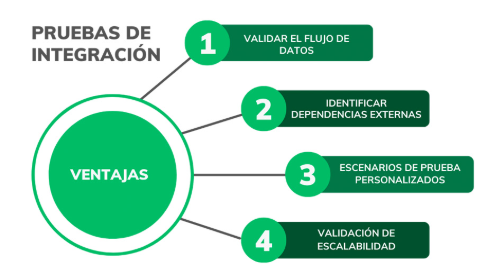
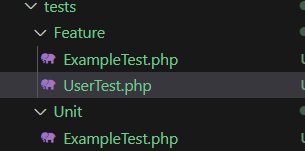
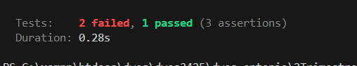

UD7- API-Rest. / S5- Testing
Índice
0:00:00 - INTRODUCCIÓN 0:09:49 - CREACIÓN DE TEST 0:21:44 - ESCRIBIENDO TESTS 0:44:02 - APILCANDO TDD 1:06:18 - EJEMPLO TESTS EN PROYECTOS 1:12:25 - CONCLUSIONES
INTRODUCCIÓN -
El testing es una disciplina dentro del desarrollo.
Independientemente de eso, todo desarrollador debe ser capaz de realizar los diferentes tests.
1 CREACIÓN DE TEST -
Lo primero:
- ¿Qué vamos a testear?
- Cuándo?


Test Unitarios.
Función, acción en concreto. Pequeños trozos o piezas de nuestro código.
El ejemplo en construcciones SOLID es el test unitario sobre un controlador.
SOLID
Igual es buen momento para repasar esosprincipios SOLID (enlace)
Probamos que la función no tiene problemas.
Test de Integración
Destinado a circuito completo, dada una ruta, comprobará que el sistema devuelve la vista que corresponde, con los datos, con el frontal, etc.
Importancia
Muchas veces, al inicio, se obvia la importancia a lahora de trabajar en casa, solos, cuando estamos empezando en pequeños proyectos.
Pero en cualquier trabajo, los test son obligatorios.
Formato de trabajo TDD
- Se escriben los tests ANTES de hacer lo que vamos a desarrollar

Formato de trabajo después del desarrollo
- Se hacen siempre antes de cada commit.
Diferencia en cómo se prueban los tests:
Podemos hacer:
- Crear los datos para que se guarden sólo en memoria (seeders / fáctories) y no en database
- Env especial para testing, para correr los test de la aplicación sin ensuciar las bases de datos.
2 ESCRIBIENDO TESTS -
Creamos nuevo proyecto en la carpeta "S5-Test"
composer create-project laravel/laravel testexample
Ya tenemos el proyecto ya preparado, con la tabla usuario preparada para hacer estos primeros tests.
PHP Unit
En Laravel existe PHPUnit y Pest, vamos a comenzar por PHPUnit por ser el más clásico. Ambos tienen el mismo fin, pero con sintáxis distintas.
Vamos por tanto a crear el primero.
Convención Pascal Case: NombreDescriptivoTest
Por defecto, si no especificamos nada, los test creados serán Feature Test.
php artisan make:test UserTest
Si quisieramos que sea unitario, le debemos añadir --unit al final
php artisan make:test UserTest --unit
Creamos el primero, el Feature, y lo vemos:

Y os crea en la carpeta /testsFeature con la siguiente estructura base:
<?php
namespace Tests\Feature;
use Illuminate\Foundation\Testing\RefreshDatabase;
use Illuminate\Foundation\Testing\WithFaker;
use Tests\TestCase;
class UserTest extends TestCase
{
/**
* A basic feature test example.
*/
public function test_example(): void
{
$response = $this->get('/');
$response->assertStatus(200);
}
}
Ambos test, aunque en carpetas separadas, tienen el mismo formato.
Funcionamiento
Dentro de un test, vamos a recurrir a métodos que van a ejecutar instrucciones automáticas.
- Vete a esta ruta
- Haz esto. ...
- Comprueba lo otro..
Por ejemplo, en el test Feature de ejemplo que carga Laravel, prueba una ruta raiz con get, y luego espera una respuesta 200. (ok)
Si todo va bien, el test pasará. Si el comportamiento NO es el esperado, se detendrá y nos avisará.
/**
* A basic test example.
*/
public function test_the_application_returns_a_successful_response(): void
{
$response = $this->get('/');
$response->assertStatus(200);
}
Así, tendremos dos grandes bloques de instrucciones
Instrucciones para pedirle que haga algo
Instrucciones ASSERT para comprobar algo
Vamos a crear primero un test que liste y que compruebe uno de los detalles
Hacemos el primer test
Primer test va a ser que podemos listar todos los usuarios de nuestro sistema.
Las funciones comienzan por test_nombre descriptivo.
Creamos las funciones de Testing
test_get_user_list

test_get_users_list
Vamos a pedir una serie de comprobaciones a un listado de usuarios API, y nos fijamos en las funciones como
- assertStatus
- assertJsonStructure
- assertJsonFragment
- assertJsonCount
- Habrían muchas más comprobaciones, si se ha creado, si falta por ser borrado ...
Y en los comentarios del código de esta primera función test_:
public function test_get_users_list(): void
{
$response = $this->get('/users');
//Qué queremos que ocurra?
$response->assertStatus(200); //Primero, comprobamos que la respuesta sea 200
//comprobamos que el contenido de la respuesta sea el esperado
$response->assertJsonStructure([
[
'id',
'name',
'email',
'email_verified_at',
'created_at',
'updated_at',
],
]);
//Ahora vamos a preguntar si nos devuelve un dato que sabemos que nos debe devolver.
//En este caso, sabemos que debe devolver un usuario con nombre Antonio
//Si no lo devuelve, la prueba fallará
$response->assertJsonFragment([
'name' => 'Antonio',
]);
//Por último, comprobamos que el número de usuarios devueltos sea el esperado
//Sabemos, cuando la poblemos, cuántos usuarios hay, y si no devuelve el número esperado, la prueba fallará
//Si poblamnos con 4 usuarios, debería devolver 4
$response->assertJsonCount(4);
}
test_get_user_detail
Vamos a crear una segunda función test_get_user_detail (personalizarlo con vuestro nombre)
public function test_get_user_detail(): void
{
$userId = 1; // Assuming we are testing with user ID 1
$response = $this->get("/users/{$userId}");
// Check that the response status is 200
$response->assertStatus(200);
// Check that the response has the expected structure
//Ahora no es un array, si no que es solo un dato
$response->assertJsonStructure([
'id',
'name',
'email',
'email_verified_at',
'created_at',
'updated_at',
]);
// Check that the response contains the expected user data
//Aquí comprobamos que el usuario con ID 1 se llame Antonio, no necesitamos contar el número de elementos
$response->assertJsonFragment([
'id' => $userId,
'name' => 'Antonio', // Assuming the user with ID 1 is named Antonio
]);
}
test_get_non_existing_user_detail
- Hasta aquí, hemos visto HAPPY Path, es decir, todo funciona correctamente
- Ahora vamos a ver cómo se comporta la aplicación cuando algo falla
- Probamos qué ocurre cuando pedimos datos de un usuairo que no existe
test_get_non_existing_user_detail
//Hasta aquí, hemos visto HAPPY Path, es decir, todo funciona correctamente
//Ahora vamos a ver cómo se comporta la aplicación cuando algo falla
//Probamos qué ocurre cuando pedimos datos de un usuairo que no existe
public function test_get_non_existing_user_detail(): void
{
$nonExistingUserId = 9999; // Assuming this user ID does not exist
$response = $this->get("/users/{$nonExistingUserId}");
// Check that the response status is 404
$response->assertStatus(404);
}
Tebemos que tener en cuenta que muchas emnpresas comienzan por los test y codificamos para satisfacer esos test (TDD)
Es lo que hemos hecho, vamos a correrlo y fallará, porque la app está vacía.
Eliminamos los test de ejemplo ExampleTest...
Definimos la estrategia. ENV Testing.
Podemos crear seeders de testeo.
Pero vamos a definir nuestro .env de testing copiando, pegando y renombrando el .env

Diferente al vídeo
Ten en cuenta que en el vídeo crea una base de datos con Mysql en lugar de con sqlite.
Cambiar en el .env el motor a: DB_CONNECTION=sqlite_testing
En config / database, agrega otra conexión para el env.testing así:
'sqlite_testing' => [
'driver' => 'sqlite',
'database' => env('DB_DATABASE', database_path('databasetesting.sqlite')),
'prefix' => '',
'foreign_key_constraints' => env('DB_FOREIGN_KEYS', true),
],

.env.testing
DB_CONNECTION=sqlite_testing
DB_DATABASE=database/databasetesting.sqlite
Migramos el entorno testing con --env=testing
php artisan migrate --env=testing
Comprobamos que se ha ejecutado con éxito:


3 APLICANDO TDD -
Vamos a explicar que estos test heredan de la clase base TestCase que les da el comportamiento.
Vamos a ver qué nos dice el test (fallar) cuando los corramos:
php artisan test


Como vemos, nos da info de todo lo que ha pasado en la ejecución y por qué ha fallado
- Esperaba 200 y ha recibido un 404, con la instrucción que ha fallado
- Mismo motivo (ya que no hemos desarrollado nada) 200 / 404
Ahora vamos a solucionar los errores.
¿Cómo corregimos? vamos a hacerlo en API introduciendo lo necesario.
1º Cambiamos las rutas de los tests a API
span
- $response = $this->get("api/users/{$userId}");
$response = $this->get("api/users/{$nonExistingUserId}");
Escribimos ruta Users en api.php,
<?php
use Illuminate\Http\Request;
use Illuminate\Support\Facades\Route;
use App\Http\Controllers\UserController;
//escribimos la ruta con resource para index de forma directa
Route::get('/users', [UserController::class, 'index']);
Instalamos api
php artisan install:api
Migramos de nuevo con el test
php artisan migrate --env=testing
Generamos controlador
php artisan make:controller UserController
Y, por ahora, devolvemos un Hello World así
class UserController extends Controller
{
//devuelve index hello world
public function index()
{
return 'Hello World';
}
}
Ahora, ya fallará el primer test pero por otro motivo, el status 200 está superado. Sólo nos falta la estructura.

Devolvemos el usuario esperado
Vamos a corregir lo anterior en el controlador de Users
class UserController extends Controller
{
//devuelve index hello world
public function index()
{
//return 'Hello World';
// ahora devolvemos todos los usuario en JSON
$users = User::all();
return response()->json($users);
}
}
Creamos un seeder para poblar
php artisan make:seeder UserSeeder
/**
* Run the database seeds.
*/
public function run(): void
{
//Creamos 4 usuario uno se debe llamar como tú
User::factory()->create([
'name' => 'Antonio',
]);
User::factory(3)->create();
}
Creamos una nueva función en el testing para resetear las migraciones y poblarlas
Podríamos haberlo hecho a mano, pero así se automatiza más y no se nos olvida añadirle el entorno de testing (--env=testing)
- Ya que se ejecutará en la base de datos de testing por defecto
public function test_set_database_config(): void
{
Artisan::call('migrate:reset');
Artisan::call('migrate');
Artisan::call('db:seed');
$response = $this->get('/');
$response->assertStatus(200);
}
- Declaramos la ruta raiz en api.php para que no nos de errores.
- Agregamos el Seeder al Database:
$this->call(UserSeeder::class);
DATABASE: MEMORY
Cuidado con tener la sentencia <env name="DB_DATABASE" value=":memory:"/> en el archivo phpunit.xml
Ya que si es así no te hará las migraciones en archivo y las hará en memoria.

Y comprobamos de nuevo, con un sólo fallo, vemos cual:


Nos ha fallado a la hora de devolvernos un detalle del ID 1

Vemos la base de datos si es correcta.

Pero claro, no hemos definido la vista para el detail (show)
Controlador Users/id detail
Y es que no lo tenemos definido ni en la ruta ni en el controlador.
Lo solucioinamos, en la API, añadimos:
Route::get('/users/{id}', [UserController::class, 'detail']);
Y en el controlador:
//devuelve un usuario por id
public function detail($id)
{
$user = User::find($id);
return response()->json($user);
}
Comprobamos tras finalizar.
Pero vemos que el test donde el usuario no existe, falla

Para ello, hay que comprobar y devolver un 404
Volvemos a corregir:
public function detail($id)
{
$user = User::find($id);
//devolvemos 404 si el usuario no existe
if (!$user) {
//abort(404);
return response()->json(['error' => 'User not found'], 404);
}
return response()->json($user);
}
Y volvemos a probar y, si todo ha ido bien, hemos pasado los tests:
Ahora sí, podemos hacer el COMMIT a nuestro repositorio.

4 EJEMPLO TESTS EN PROYECTOS -
Segundo formato de trabajo
Hacer los test en un proyecto ya realizado, como por ejemplo vuestro PROYECTO
- Guardar copia primero.
En el vídeo muestra un ejemplo con un proyecto de ellos.
PROYECTO: Plan de Pruebas y documentación final.
Debemos realizar y documentar nuestro plan de pruebas del proyecto y ejecutarlo en el Sprint y presentación final.

Referencias
- Testing
 *
*